how might we reinvent youth futures movement’s image to better represent their mission?
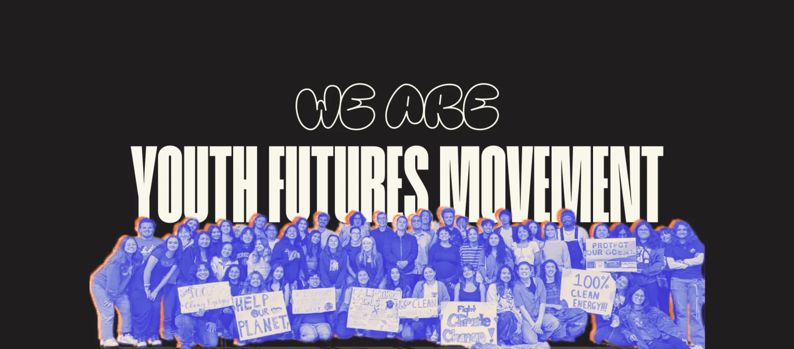
context
defining non-profit branding
Youth Futures Movement is a new nonprofit organization in San Diego focused on giving youth a voice in politics, especially when combating systems of oppression.
I worked with a team of other designers to redesign their website to be easier to navigate, representative of their mission, and appealing to underrepresented youth.
01
needfinding
What did YFM want to be?
We first interviewed the YFM team to understand what our main stakeholders wanted, so that their visions and ideas for the visual identity would help guide our design decisions.
bold and empowering
The website needed to show how YFM would take big steps to uplift underprivileged people.
01
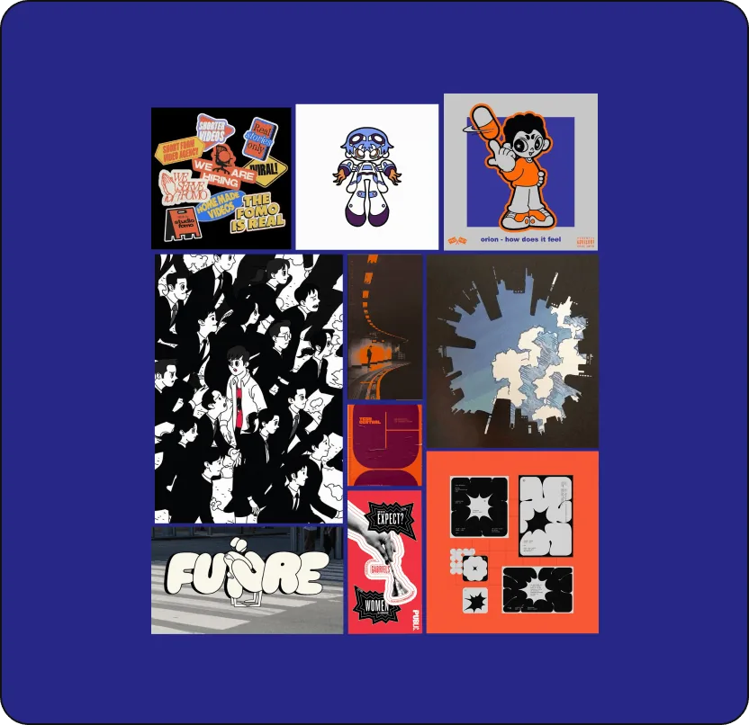
vibrant, sparking curiosity
YFM partners wanted the website to be bright and colorful to appeal to younger audiences.
02
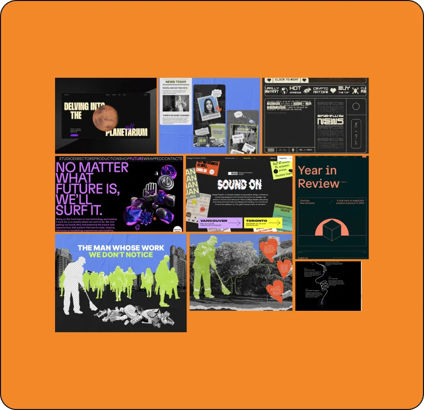
user research
Collecting user feedback
We surveyed and interviewed both current YFM members and target users who were unfamiliar with the website, asking about the clarity, organization, and any issues with the current website.
01
02
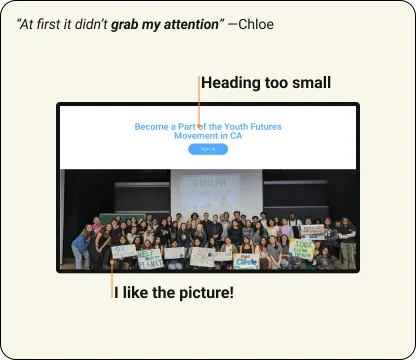
03
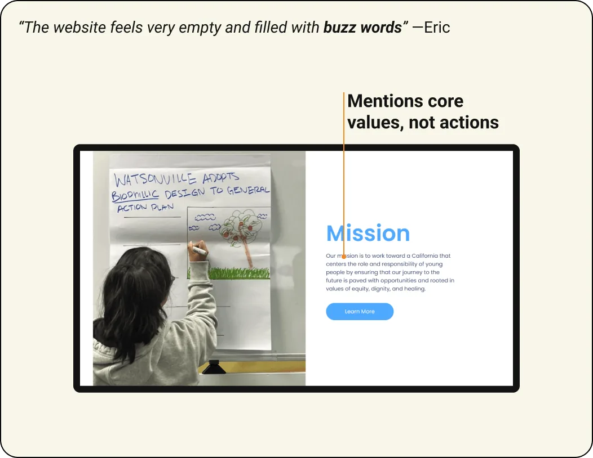
04
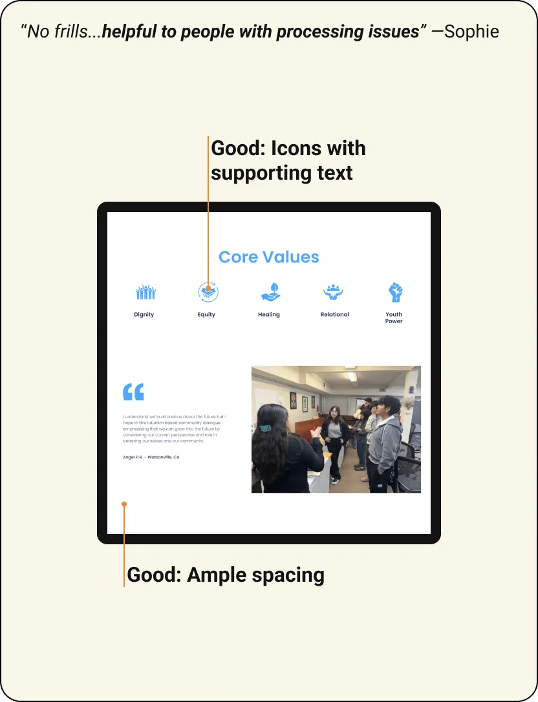
synthesis
consolidating our research
Based on the feedback we got and our market research, I created a user flow diagram and site map to lay out a plan for designing the website over the next few weeks. Together, my team used what we learned to imagine what YFM could be.
user flow diagram
I kept the flow simple, since user feedback indicated that people liked how easy the original website was to navigate.
01
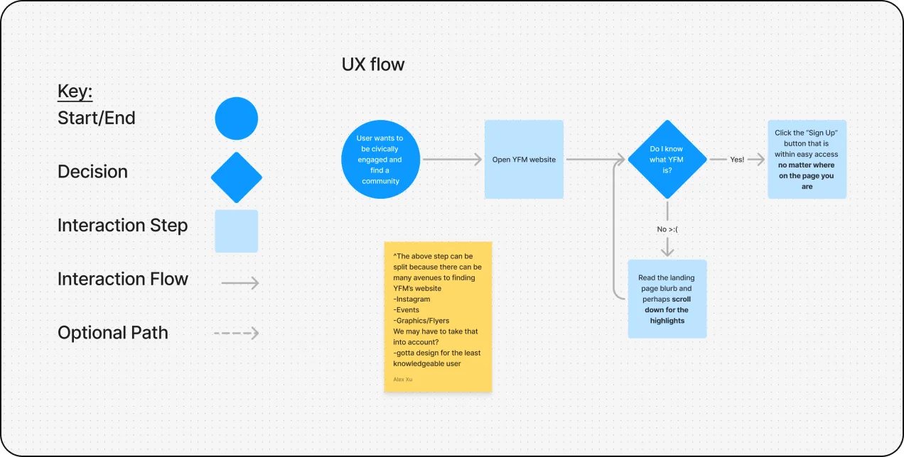
site map
My site map gave our team a place to discuss how to reorganize the original website’s information into a better information hierarchy.
02
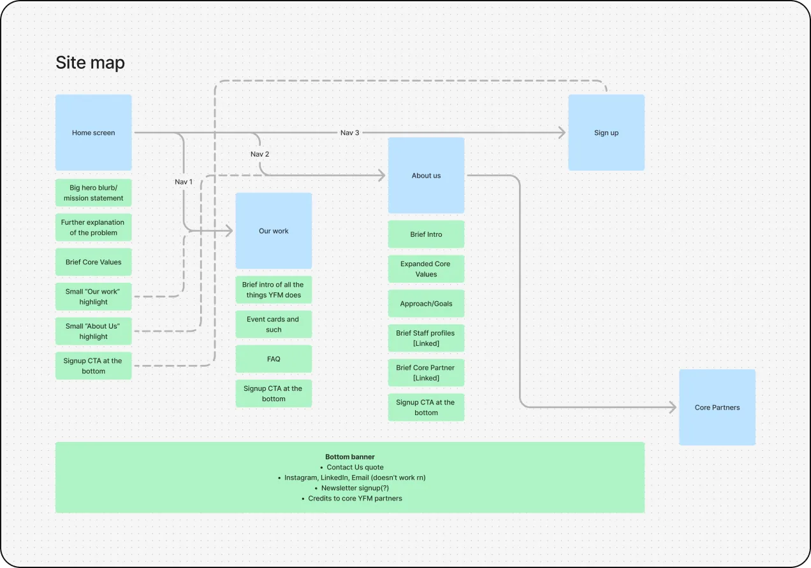
wall walking
Combining all of our initial ideas, we gave feedback on each and picked out the best ones.
03
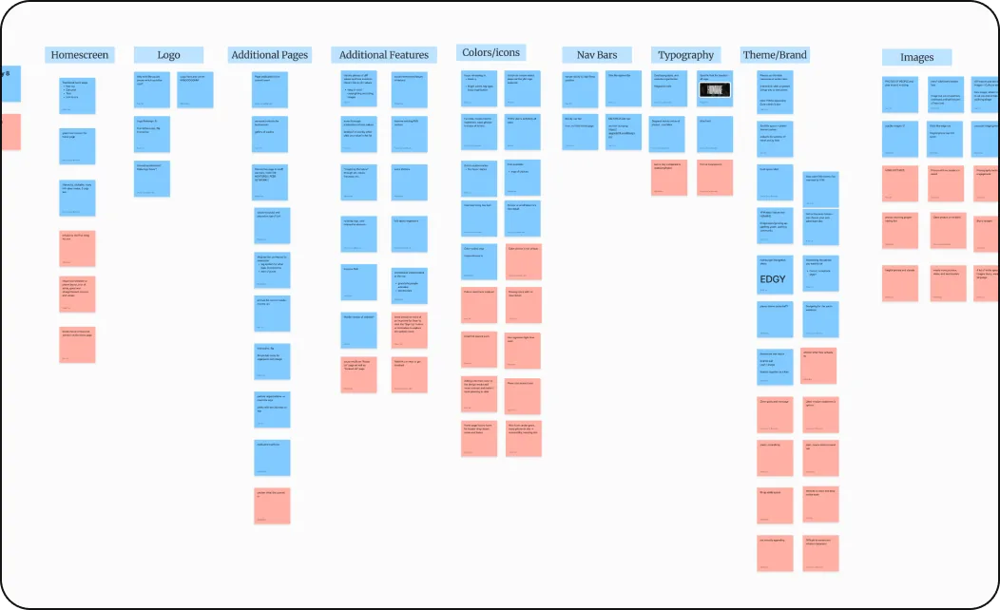
crazy 8s
I sketched out 4 initial ideas for page layout, interaction, typography, and info organization.
04
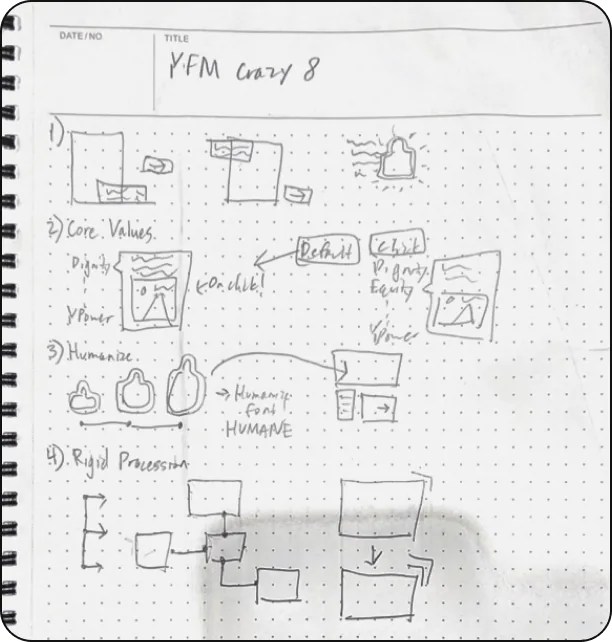
prototyping
Bold, larger than life, inspiring
I was in charge of the home screen. As the landing page, it had to draw people in to explore the website, so I went for a bold, larger than life, inspiring look.
01
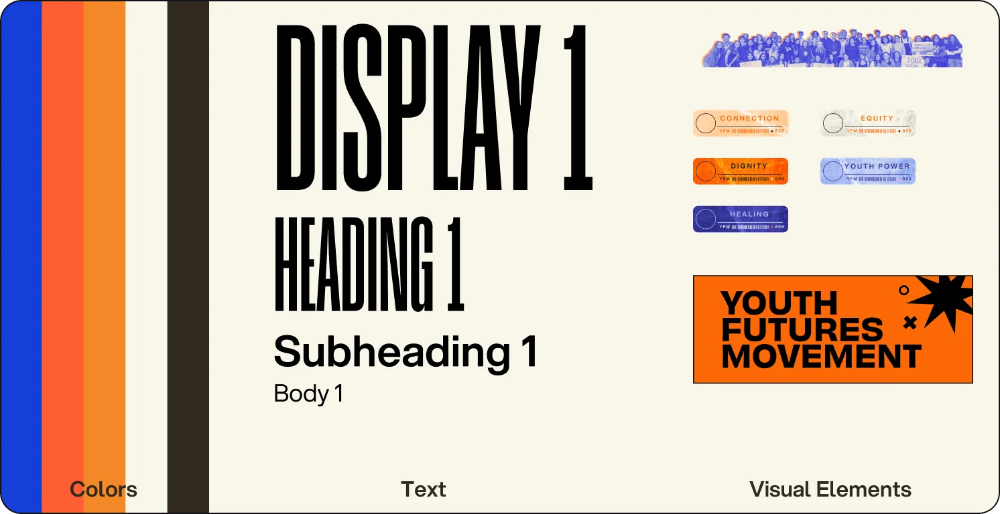
02
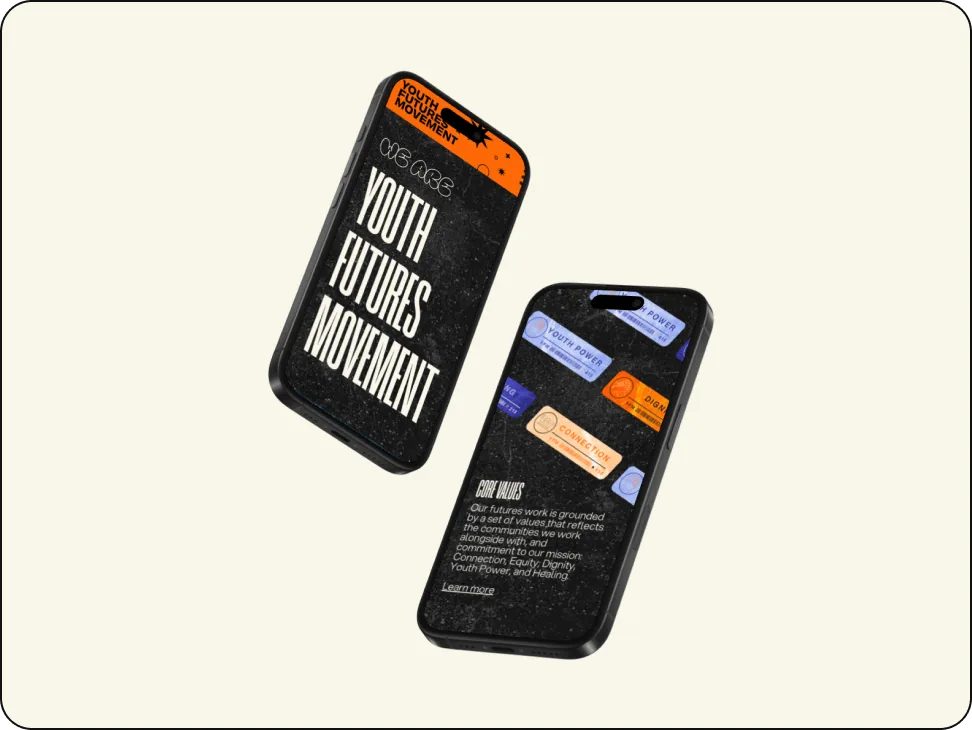
result
Validating our work
To justify our redesign, we conducted closing interviews and usability testing. Overall, feedback was very positive.
01
+10%
increase in user task success
02
+90%
increase in user satisfaction
03
4
usability testing sessions
reflections
what i’d do differently
I took full advantage of the YFM website to experiment with aesthetics I like, and pushed my question-writing skills: each question we asked came out of in-depth team debate to reach the heart of the problem. Like any project, though, we had our fair share of road bumps.
lesson
a design system is critical to keeping visual direction aligned
1 of 2
We each took charge of a different page, and struggled to keep our visual direction aligned. Next time, I’d take an atomic design approach: agree on the smallest units first, then build up to bigger component decisions.
lesson
be candid about what each of us can accomplish in a week
2 of 2
We overestimated how much we could each take on, which led to an unrealistic timeline and promises to our client. Open dialogue about our minimum weekly hours would have helped.